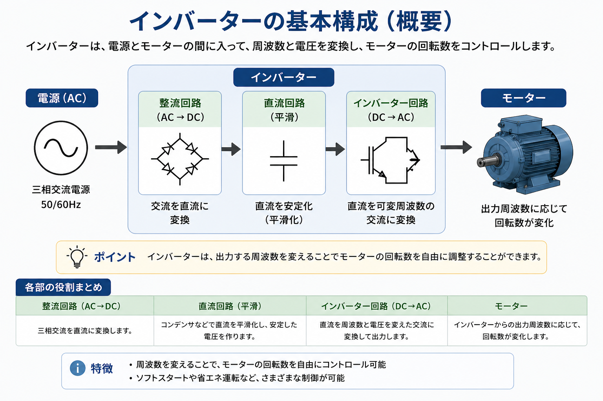
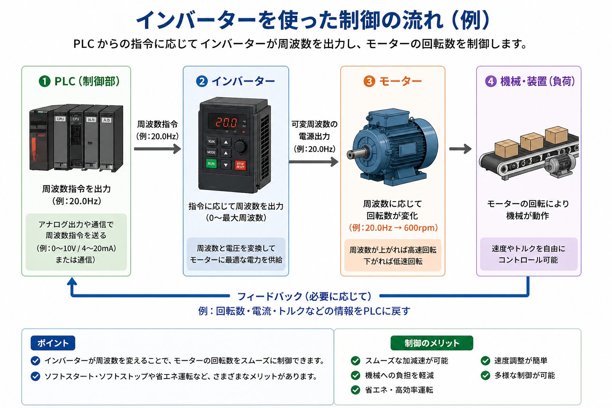
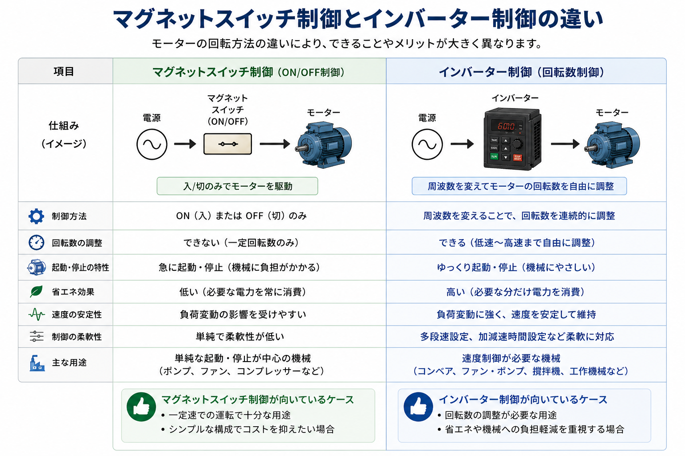

1. 先に結論
インバーターは、電源とモーターの間に入って、モーターへ出す周波数や電圧を変える制御機器です。 ざっくり言うと、モーターをただ入切するだけではなく、必要な速さで回すための部品です。
コンベア、ファン、ポンプ、攪拌機など、速度を変えたい機械でよく使われます。 ゆっくり立ち上げたり、ゆっくり止めたりできるので、機械への負担を減らしやすいのも特徴です。
インバーターは「何Hzでモーターを回すか」を見ると分かりやすい
いきなり細かい設定値から入るよりも、 「運転指令が入る → 周波数指令が入る → インバーターが出力する → モーターの回転数が変わる」 という流れで見ると追いやすくなります。

先輩インバーターは、モーターの速さを変えたいときに使う部品だよ。

新人マグネットスイッチみたいにON/OFFするだけじゃなくて、速さも変えられるんですね。

先輩そう。だから「入っているか」だけじゃなくて、「何Hzで出しているか」も見るのが大事だね。
2. インバーターとは
インバーターは、交流電源をいったん直流に変換し、そのあと再び交流に戻して、 モーターへ出す周波数を調整する機器です。
三相モーターは、基本的に電源の周波数に応じて回転数が変わります。 そのため、インバーターで出力周波数を変えると、モーターの回転数も変えられます。

50Hz・60Hzだけでなく、必要な周波数で出力できる
商用電源は地域や設備によって50Hzや60Hzですが、インバーターを使うと、 たとえば20Hz、40Hz、60Hzのように、必要な周波数でモーターを動かせます。
最初は「Hzを上げると速く、下げるとゆっくり」でOK
初心者のうちは、「Hzを上げると速く回る」「Hzを下げるとゆっくり回る」というイメージで十分です。 実際の設定では、モーター容量、定格電流、加減速時間、上限周波数なども関係します。
3. インバーターの基本構成
インバーター内部の細かい電子回路まで完全に覚える必要はありません。 現場で最初に押さえるなら、電源を受けて、内部で変換し、モーターに出力する流れを知っておくと十分です。
| 部分 | 役割 | 現場での見方 |
|---|---|---|
| 入力側 | 三相電源などをインバーターへ入れる部分 | 元電源、ブレーカー、電源電圧を確認する |
| インバーター内部 | 交流を直流にし、再び可変周波数の交流に変換する | 表示、パラメータ、異常コード、運転状態を見る |
| 出力側 | モーターへ周波数と電圧を変換した電力を出す | モーター配線、出力周波数、回転方向を確認する |
インバーターは「電源を入れるだけの箱」ではない
インバーターには、運転指令、周波数指令、加速時間、減速時間、保護機能などの考え方があります。 電源が来ていても、運転指令や設定が合っていなければモーターは動かないことがあります。
4. インバーターを使った制御の流れ
PLCと組み合わせる場合、PLCからインバーターへ運転指令や周波数指令を送り、 インバーターがモーターの回転数を調整します。
周波数指令は、アナログ信号、通信、パネル設定など、設備によって方式が違います。 初心者のうちは、まず「誰がインバーターに何Hzで回せと指示しているか」を見ると分かりやすいです。

運転指令
インバーターに「運転してよい」と伝える信号です。これが入っていないと、周波数指令があっても動かないことがあります。
周波数指令
何Hzで回すかを決める指令です。アナログ、通信、パネル設定など、設備ごとに確認先が変わります。
異常状態
過電流、過負荷、過電圧などで停止している場合があります。表示や異常履歴を確認します。
出力周波数
指令値だけでなく、実際に何Hzを出しているかを見ると、原因を分けやすくなります。
5. マグネットスイッチ制御とインバーター制御の違い
マグネットスイッチ制御は、モーターをON/OFFする考え方が中心です。 一定速で回す用途にはシンプルで分かりやすい制御です。
一方、インバーター制御は、周波数を変えて回転数を調整できます。 速度を変えたい、ゆっくり起動停止したい、省エネを意識したい設備で使われます。

| 比較項目 | マグネットスイッチ制御 | インバーター制御 |
|---|---|---|
| 制御方法 | ON/OFFでモーターを入切する | 周波数を変えて回転数を調整する |
| 回転数 | 基本的に一定速 | 低速から高速まで調整しやすい |
| 起動・停止 | 急に起動・停止しやすい | 加速時間・減速時間を設定できる |
| 向いている用途 | 単純な入切で十分な設備 | 速度調整が必要なコンベア、ファン、ポンプなど |
新人じゃあインバーターの方が全部上位互換なんですか？
先輩そうとは限らないよ。単純なON/OFFで十分なら、マグネットスイッチ制御の方がシンプルで扱いやすいことも多いんだ。
6. 現場でインバーターを見るときのポイント
インバーターは設定項目が多いので、最初から全部を覚えようとすると難しく感じます。 まずは、設備トラブルや確認時によく見るポイントに絞ると分かりやすいです。
表示周波数
何Hzで出力しているかを見ます。指令値と実際の出力が合っているか確認します。
RUN状態
運転指令が入っているか、停止状態なのかを表示や端子状態で確認します。
アラーム表示
異常コードが出ている場合は、過負荷や過電流などの原因を切り分けます。
加速時間・減速時間
立ち上がりや停止時の異常は、加減速時間が関係していることがあります。
加速時間・減速時間も大事
インバーターでは、モーターを何秒かけて立ち上げるか、何秒かけて止めるかを設定できます。 短すぎると過電流や過電圧になりやすく、長すぎると設備の動きが遅く感じることがあります。
7. トラブル時の確認ポイント
インバーターまわりでモーターが動かないときは、いきなり本体故障と決めつけず、 入力・指令・出力・異常の順に分けて確認します。
- インバーターに電源が入っているか
- ブレーカーやモーターブレーカーが落ちていないか
- 運転指令が入っているか
- 周波数指令が入っているか
- 出力周波数が表示されているか
- アラームや異常コードが出ていないか
- モーター側の配線や負荷に異常がないか
「動かない」は4つに分けて考える
電源がない、運転指令がない、周波数指令がない、異常で止まっている、というように分けて考えると原因を追いやすくなります。
8. 注意点
インバーターは便利な部品ですが、電源・モーター・安全機能に関わるため、安易な配線変更や設定変更は避けます。 設備仕様、メーカー資料、取扱説明書、社内手順に従って確認することが大切です。
- インバーターは三相モーターで使う前提のものが多く、単相モーターへ安易に接続しない
- 単相モーターへの使用可否は、必ずメーカー資料・取扱説明書で確認する
- 電源OFF後もしばらく内部に電荷が残る場合があるため、点検・配線変更・交換は放電時間を守る
- STO付きインバーターでは、安全入力が成立していないと運転できない場合がある
電源を切った直後にすぐ触らない
インバーター内部には、電源を切ったあともしばらく電荷が残る場合があります。 点検・配線変更・交換作業は、取扱説明書の放電時間や社内手順に従って行います。
STO付きインバーターは別の見方も必要
STO付きインバーターでは、通常の運転指令とは別に、安全回路側の入力が成立しているかを見る必要があります。 STOの詳しい考え方は、別記事で整理する予定です。
9. まとめ
インバーターは、モーターの回転数を自由に調整したいときに使う制御盤部品です。 マグネットスイッチのように単純なON/OFFだけではなく、周波数を変えることで速度調整や加減速制御ができます。
初心者のうちは、細かいパラメータを全部覚えるよりも、 運転指令、周波数指令、出力周波数、異常表示を分けて見ることが大切です。
- インバーターは、周波数を変えてモーターの回転数を調整する部品
- マグネットスイッチ制御はON/OFF中心、インバーター制御は速度調整が得意
- トラブル時は、電源・運転指令・周波数指令・異常表示を分けて確認する